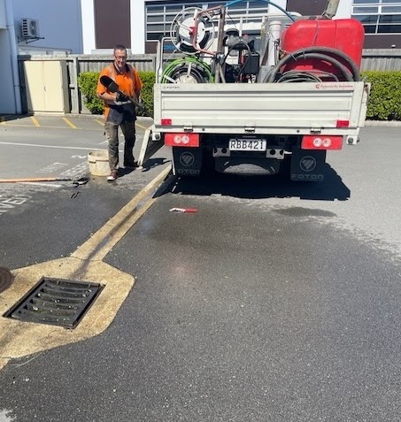
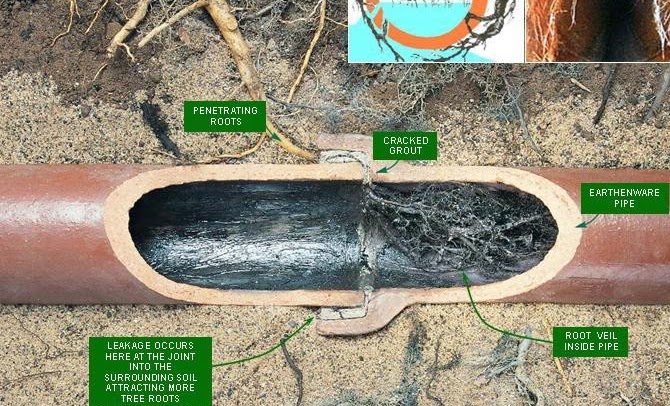

Blocked Drains
Clearing blocked sewer and stormwater drains, including root intrusion, accumulated debris and other obstructions.
Christchurch City · Canterbury
CH Drainage 1996 Ltd is a small, owner-operated drainage business serving Christchurch, Christchurch City and Canterbury. I'm Graham Boyd, and I concentrate on the work I know best: investigating and resolving drainage problems.
Prefer to text? 022 359 2571. Calls to the landline are forwarded to my mobile when I'm away from the office.

About
CH Drainage is now a small, owner-operated business specialising in blocked drains, CCTV inspections and drainage fault finding.
I'm Graham Boyd, the owner of CH Drainage. After approximately 20 years serving Canterbury under the same ownership, I've simplified the business to concentrate on the work I know best: investigating and resolving drainage problems.
I take pride in finding practical solutions, giving straightforward advice and helping customers avoid unnecessary work or expense.
Graham Boyd, Owner, CH Drainage

Services
Blocked drains, CCTV drain inspections and drainage problem solving for properties across Christchurch and Canterbury.
With waterblasting, mechanical root-cutting, CCTV inspection and vacuum equipment on board, I can investigate and resolve most blocked drain problems in a single visit.
Clearing blocked sewer and stormwater drains, including root intrusion, accumulated debris and other obstructions.
Video inspections of sewer and stormwater systems to identify damage, blockages and other faults. Written reports and video footage can be provided where required, including for pre-purchase inspections and repair investigations.
Investigating recurring blockages, damaged pipes, poor drainage and stormwater problems, with practical recommendations for repair or maintenance.
Where excavation, drainlaying or more substantial repairs are required, I can arrange assistance from trusted, experienced subcontractors.
How it works
Phone 03 337 4018 or email with a brief description of the problem. If I'm out on a job, leave a message and I'll get back to you as soon as I'm available.
I generally attend to jobs within a few days and can sometimes offer same-day service, depending on existing commitments.
My truck carries the equipment to investigate and resolve most blocked drain problems in a single visit.
Practical recommendations for repair or maintenance, with written reports and video footage where required, and trusted subcontractors arranged for larger repairs.
Good to know
I generally attend to jobs within a few days and can sometimes offer same-day service, depending on existing commitments.
Usually, yes. My truck carries waterblasting, mechanical root-cutting, CCTV inspection, vacuum and other specialist equipment, so I can investigate and resolve most blocked drain problems in a single visit.
Written reports and video footage can be provided where required, including for pre-purchase inspections and repair investigations.
Where excavation, drainlaying or more substantial repairs are required, I can arrange assistance from trusted, experienced subcontractors.
CH Drainage serves Christchurch and Canterbury, as it has for approximately 20 years under the same ownership.
As I'm often out working on drainage jobs, I may not be able to answer your call immediately. Please leave a message and I'll get back to you as soon as I'm available.
Contact
I generally attend to jobs within a few days and can sometimes offer same-day service, depending on existing commitments.
Please phone or email with a brief description of the problem.
As I'm often out working on drainage jobs, I may not be able to answer your call immediately. Please leave a message and I'll get back to you as soon as I'm available.
Graham Boyd, Owner, CH Drainage
Experienced advice. Practical solutions. Personal service.